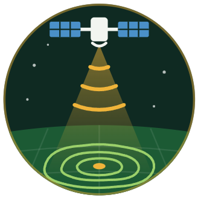

Move over the map to read values

SakaSARAn LSTM trained on 2001–2018 NASA POWER daily weather. It reads 30 days of rain, temperature, humidity, sunlight and soil wetness, then forecasts root-zone wetness for the next 7 days. Each grid cell is about 50 km across: this is regional soil, not a paddy sensor.
Generated from the data. Click an event to jump to it.